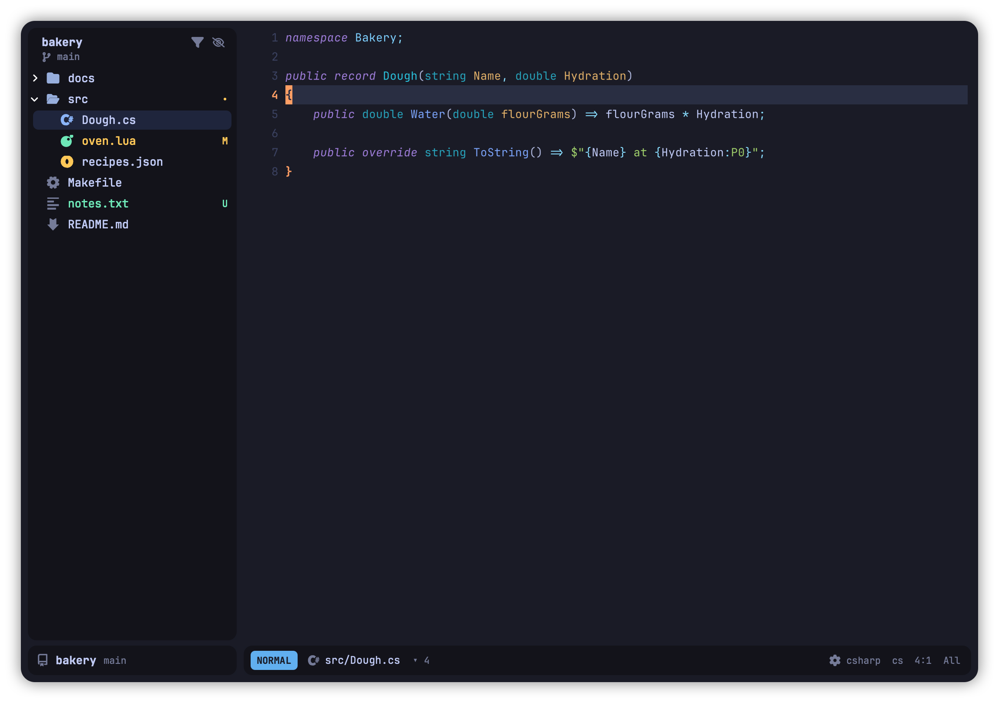
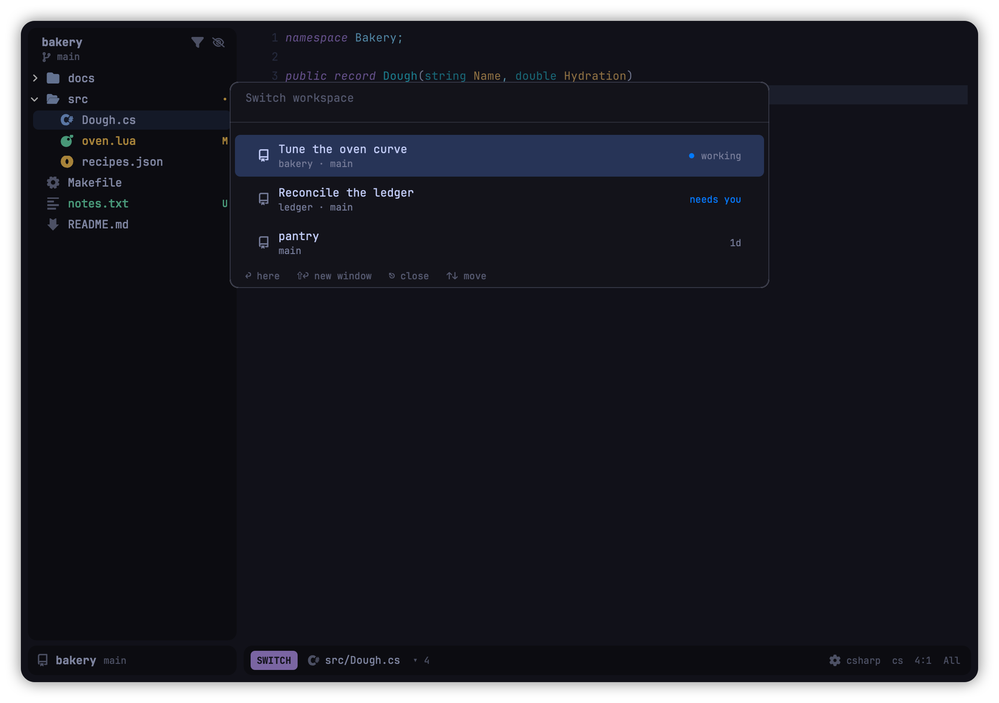
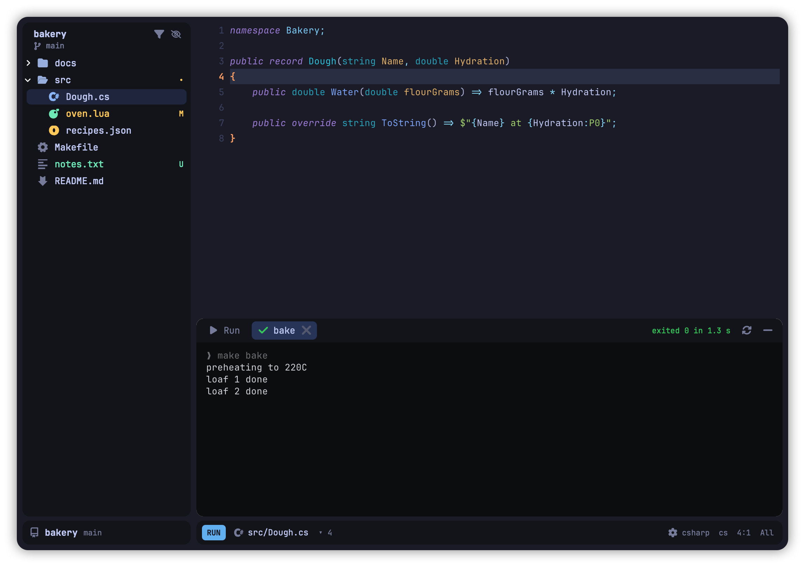
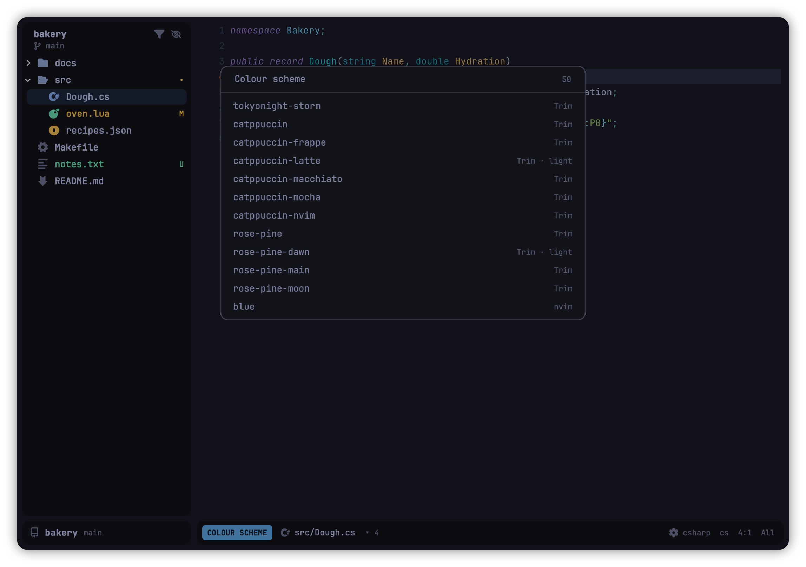

A trimmed IDE
around Neovim
Neovim in a native Mac window, with only the panes an editor is missing for project work. Powerful enough, not bloated, and your editing stays in nvim.
$ brew install --cask optionull/tap/trimmacOS 15 or later, Apple silicon. Installs Trim and Shim, and Neovim if you need it.

Everything you reach for, nothing you don't
A small set of native panes, each one optional, each drawn by the app so it follows your colour scheme and font.
A file tree that knows git
Branch, changed and new files, diagnostics on the files and folders that have them, a live filter.
Language servers that recover
Roslyn, rust-analyzer, TypeScript and more, started from your project files, restarted when they crash, isolated from the editor.
Instant by design
Opening a file never waits for a plugin. Big files open plain, and the keyboard is in the editor before nvim finishes reading.
Jump between repositories and worktrees
One search line over everything you work on, named by what the work is about: the branch, or the title of the agent session in it if you use heed.
- Return opens it here, ⇧Return in a new window
- The list never shuffles while it fills in
- A workspace with a window is brought forward, never opened twice


Run anything the folder offers
F5 runs, ⇧⌘B builds. Trim reads what the folder can run, never builds to find out: .NET, Swift and Rust projects, Makefiles, mise, just, npm scripts and VS Code tasks.
- Output in a tab each, with the exit status and a button to run again
- Several runs at once
- One Problems list from servers and builds
Try a look before you keep it
Colour schemes and fonts are lists where each choice is tried live in the editor, the tree and the panes. Return keeps it, Escape puts it back.
- tokyonight, catppuccin, rose-pine and every nvim scheme
- Any installed monospaced font, with its own icons

And Shim, for the single file
Shim is nvim alone in a native window with your own config: no tree, no panels, instant. Open it for the file you want to edit now, and switch between your nvim configs from a menu. It installs with Trim.
Install
$ brew install --cask optionull/tap/trim